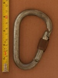
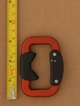

| Image | Summary | ||||
|---|---|---|---|---|---|
 | AustriAlpin (Steel D) (reverse notch & window) | asymmetric D | manual | gate stopped - gate stop | unique reverse notch & hole gate, plastic threads |
|  | AustriAlpin (Steel HMS) (reverse notch & window) | HMS | manual | gate stopped - gate stop | unique reverse notch & hole gate, plastic threads |
 | AustriAlpin Eleven ID Screwlock | asymmetric D | manual | gate stopped - gate stop | modern workhorse carabiner with host of features: unique ID# semi-guarded nose, thick locking sleeve, ring-dimpled rivets |
 | AustriAlpin Ovalo GI Screwlock Brass Sleeve | offset oval | manual | gate stopped - gate stop | heavy workhorse oval-ish with modern features |
 | AustriAlpin Rondo HMS Slide Lock | HMS | full-auto | slide | slidelock/pivot lock |
|  | AustriAlpin Stratus | trapezoid | full-auto | slide | paragliding carabiner, anti-crossloading spine spur |
 | AustriAlpin Sym Oval Clawlock Screwgate v1 | oval | manual | nose stopped - unknown | clawlock nose, nose-stopped locking sleeve |